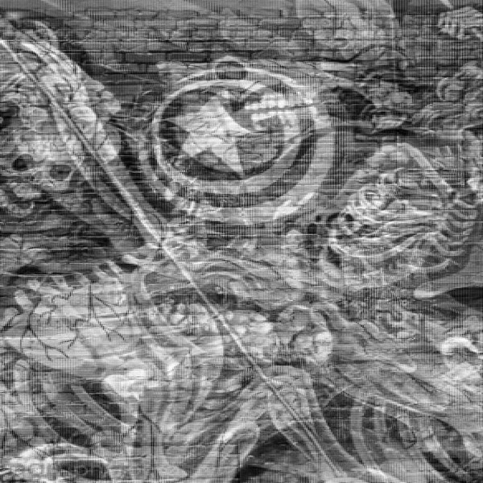
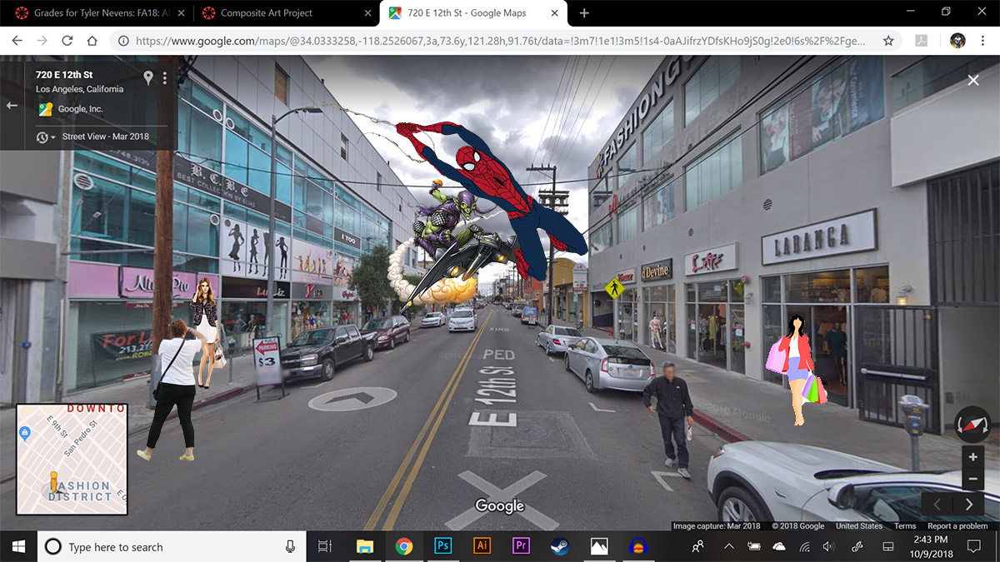

Street Glitch, Photoshop, 2018
The reason I glitched this image was because of the curiosity of what would art really look like if the effects were changed in a way. Asking myself after if it make the image better or worse? This image was actually found but I've seen this before in downtown Los Angeles where a lot of people would do street art on buildings or as most people call it graffiti. I really wanted to change the shade of the picture and also try to maybe have the art itself be sort of turned around in a way. I really wanted to emphasize the picture itself of the skull on the horse, sort of asking questions of why it is what it is or what was the origin of maybe this person or being.

Hollywood Madness, Photoshop, 2018
So where the picture come from is actually my hometown Downtown, Los Angeles. It is a little fashion center in the city which where I would go shopping for clothes. I've been going to this spot since high school so ever since its like been my little favorite spot to go to on a weekend. For this image i just added what i really think would fit for the atmosphere from having a girl holding a bunch of bags cause she was shopping from spider man being attacked by a villain. I think the image would function as being as a little clip of maybe a cartoon being chased by a villain and having the other images i put there to show the atmosphere of downtown Los Angeles.

Zombie Nightmare, Net art, 2018
This project main theme is zombies, in which i am a big fan of. The concept of this piece was to give the viewer different scenarios in very different zombie worlds like The Walking Dead, Call of Duty, and Resident Evil and choose which one the viewer can survive. I also wanted to tell a story of it a bit make it seem as the viewer is reading it and imagining in their heads surviving in this world as almost like an adventure . I hope the viewer can learn a lot of things from these different zombie worlds and become a fan for it.

Glow in the dark Clock, Code, 2018
The title of this code art piece is called Glow in the Dark clock. From working on the coding file my min goal was to change the entire appearance of the clock. The example had dots and an actual circle out line like a normal clock would. For mine i cleared everything off and made fill outlines that follow it would all look like a circle coming together but slowly based on second, minutes, and hour. A great way to track time.

Flappy Christmas, Code, 2018
In my final project proposal i wanted to explore with using code. After learning so much from code and from p5 i decided i wanted to work on coding specifically to try to create very basic game but try put it in my own way so people can first try it out. The whole
follow and i am a big fan when it comes to video games because video games is all about coding. I would mostly show this piece projected for the viewer to see or sort of doing it in a way where everyone participate in it first hand and get a true reaction to the game.